Onsen Under The Stars
Spending Mid-Autumn Festival at Peninsula Hot Springs
This place lives in my head rent free and I very much want to go backkkk! This hot springs trip may have been one of the absolute peak moments of my existence; This nature wonderland, with its flora, lakes, and wooden bridges, I felt like I'd stepped into a fairytale (or as cheyne would call it "that one onsen episode"), everything just felt magical. From watching the sunset while soaking in the geothermal pools, to seeing shooting stars and the unobscured night sky, it was just glorious and simply everything I dream about. I will in fact be here mentally for the next few months or so.
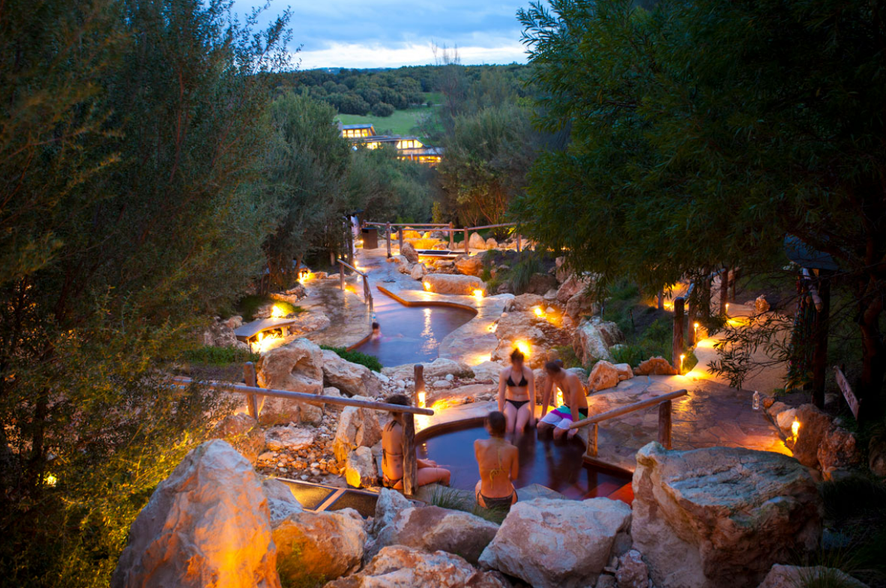
I unfortunately (or fortunately) left my phone in my bag which meant I couldn't take any photos; forced to experience the cruel fate of disconnecting and enjoying the moment (smthn smthn experiencing vs remembering self) I went with my lovely galpal Cheyne, who without I wouldn't even have gone LOL (given that we only decided to do this the day before because we saw the 1 for 1 deal)
It is, in fact, possible to travel to Mornington Peninsula from central Melbourne without a car. It just takes really damn long to get there. A ride on the green line from Southern Cross to Frankston (the very last stop),
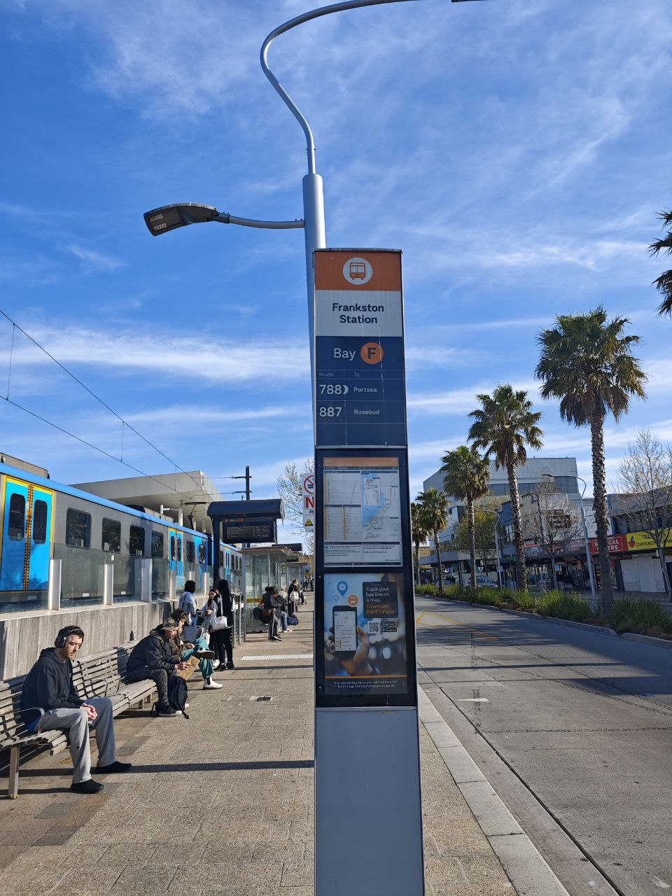
followed by a really lovely bus ride by the coast and hills
 takes you to the very depths of Mornington, with a sum of roughly 2.5-3hrs give or take. We stopped for some blue ocean pics on the way (and saw the bathing boxes!)
takes you to the very depths of Mornington, with a sum of roughly 2.5-3hrs give or take. We stopped for some blue ocean pics on the way (and saw the bathing boxes!)

 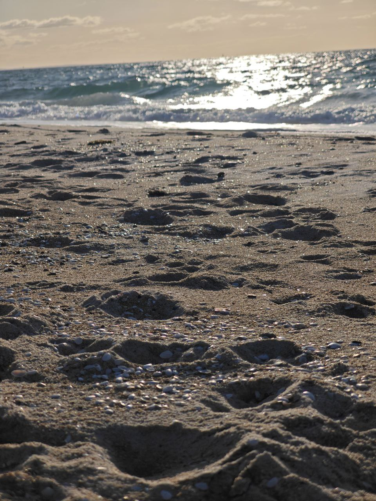
This was a hugee factor for us, given that the option to Uber there would've cost over $200 🗿 But all things considered, with the cozy trains and buses of Melbourne (and a whole lot of legroom) it didn't feel long or draining at all, and it passes by pretty quickly while in silly fun company.
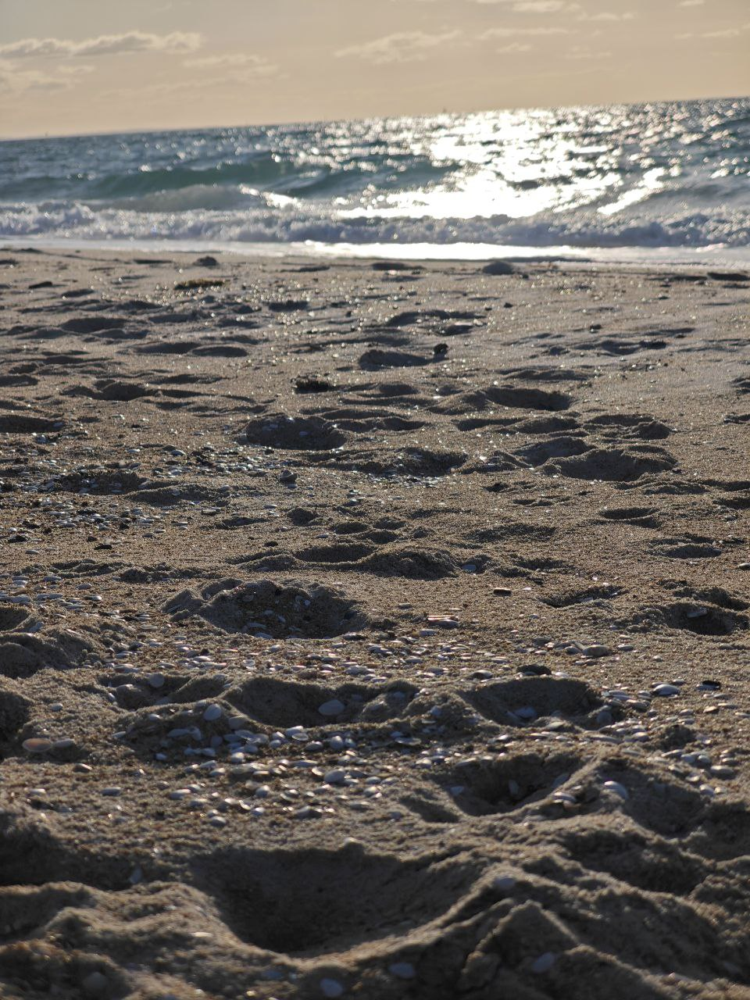
This was a hugee factor for us, given that the option to Uber there would've cost over $200 🗿 But all things considered, with the cozy trains and buses of Melbourne (and a whole lot of legroom) it didn't feel long or draining at all, and it passes by pretty quickly while in silly fun company.
We stayed at The Keith Motel, thinking we'd make it an overnight trip and explore a bit more of peninsula the next day.
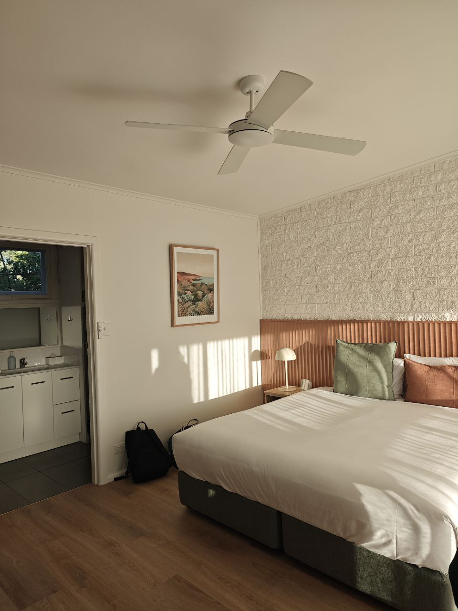
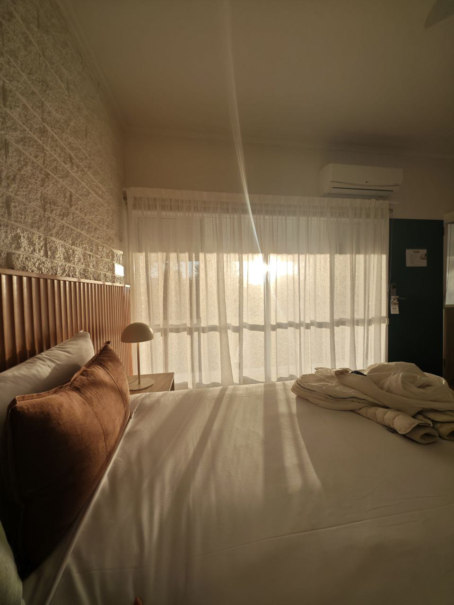
It was only an eight minute drive to the Hot Springs from there, which amounted to AUD$15 (a small price against $200 fo sho)
We booked the 6pm slot, which meant that we get a further discounted price, and that we arrived prime time to see the sunset. Once inside the Hot Springs we realized it is not just one giant hot spring, rather the area is more adeptly described as a Hot Springs Theme Park, yea this place was so so huge. There were warm, hot, even cold pools. Pools on the hilltop, single person barrel hot springs, hot springs for your hands, your feet, hot springs in a cave, hot springs next to a tiny waterfall. And also Saunas, ahhh good ol' saunas.
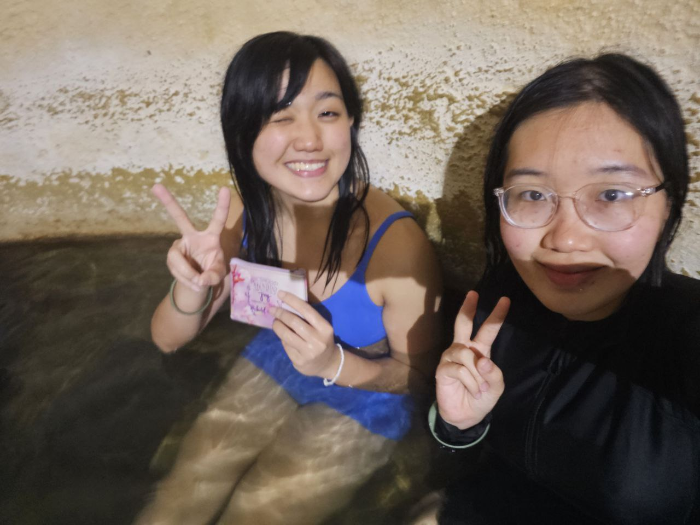
me tryna keep my wallet safe from water
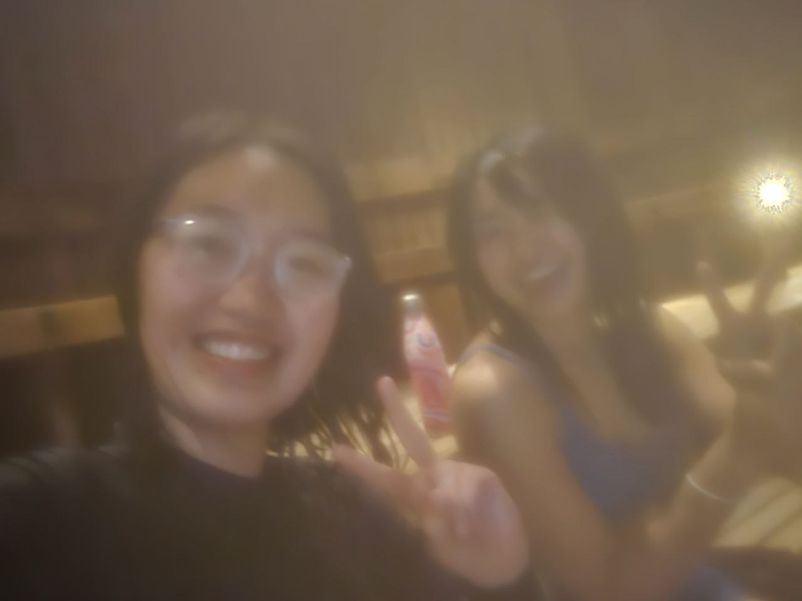
Now after basking in the glory of the sunset and chilling in the hot springs for a bit, we realised there's a pizzeria inside the theme park that would close soon, so we dried off and went to grab our wallets in the locker. I decidedly only took my wallet and no phone (mindfulness) and Cheyne took just her phone (the only reason I have photos for this blog, thank u Cheyne). I assumed I had enough money for the pizza, but alas I was wrong! I only had a $20 bill and a bunch of coins but the total for our pizza and warm soup of the day was $34. Now what ensued is great second-hand embarrassment material. I just scrambled for more cash in my wallet in front of the cashier, busting out all my heavy chunky loud coins onto the marble table and counting the sum of them. We concluded we'd just order one item less and go back for more cash to order more. The cashier stopped us short though, she said "how about I just take whatever's in your hand. Do you have $28? Then that's fine", and oh my goodness we felt so touched by the kind staff we kept saying thank you. We were literally 😭😭 in real life. So hooray! Discounted pizza!
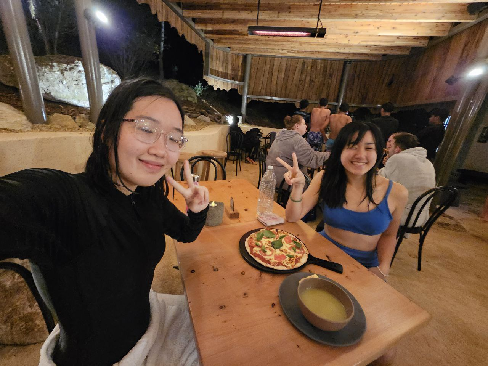
After dinner we walked around to explore the hot springs more and settled on a spot where we could see the clear night sky. It was pure coincidence that we went on the night of Mid-Autumn Festival but the moon was perfectly round and also kind of bigger than I've ever seen it before. The stars and the moon made the perfect view as I let myself be surrounded by the warmth of the onsen as temperatures dropped low. The whole experience was a kind of peace and bliss that would bring you to tears. And it did! I teared just staring at the sky while under the foliage of the trees and flowers above me. Seeing the shooting star was just the last straw, I couldn't take how perfect this moment was, it almost felt surreal.
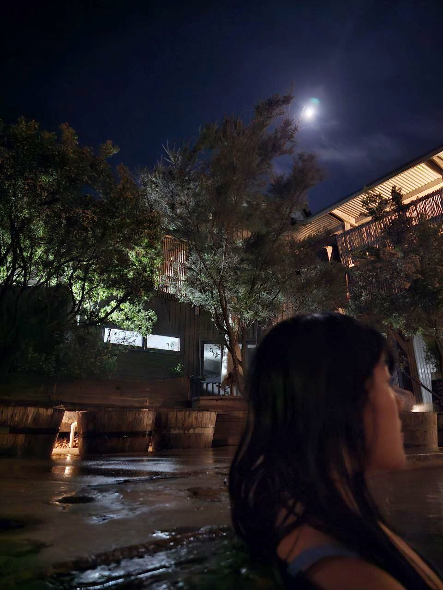
The next day we woke up and had the most bussin meal ever at an eatery five minutes away from our place. The cherry on top of everything~
 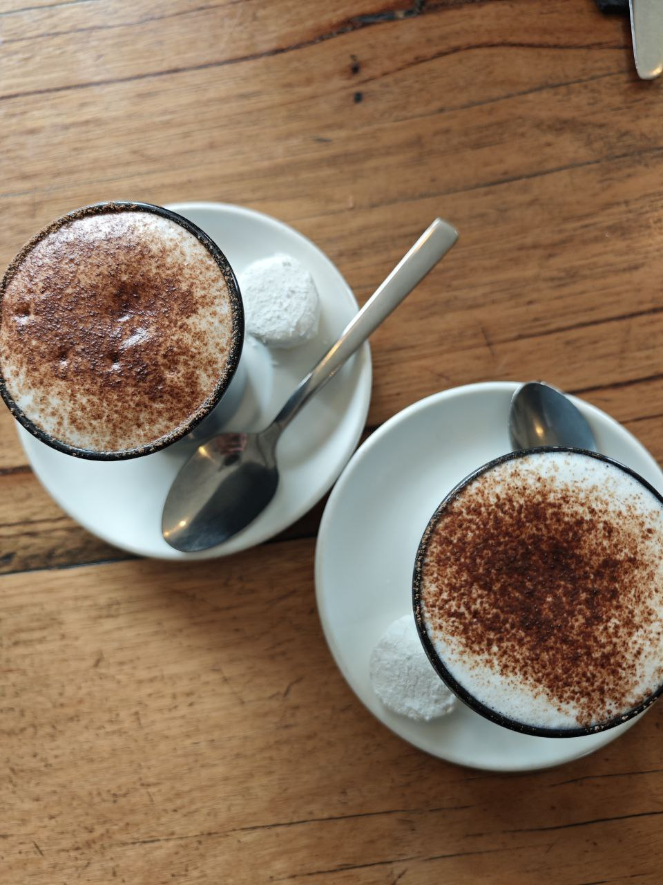
Anyways, thanks for indulging me by reading my silly journal entry and how I make a big deal of the simple things. But the simple, small things are the little bits of joy that contribute to the huge bubble of joy and satisfaction I have in life hehehe. Will definitely be coming back here, we've psyched Cheyne's two other roommates into wanting to come too muahaha
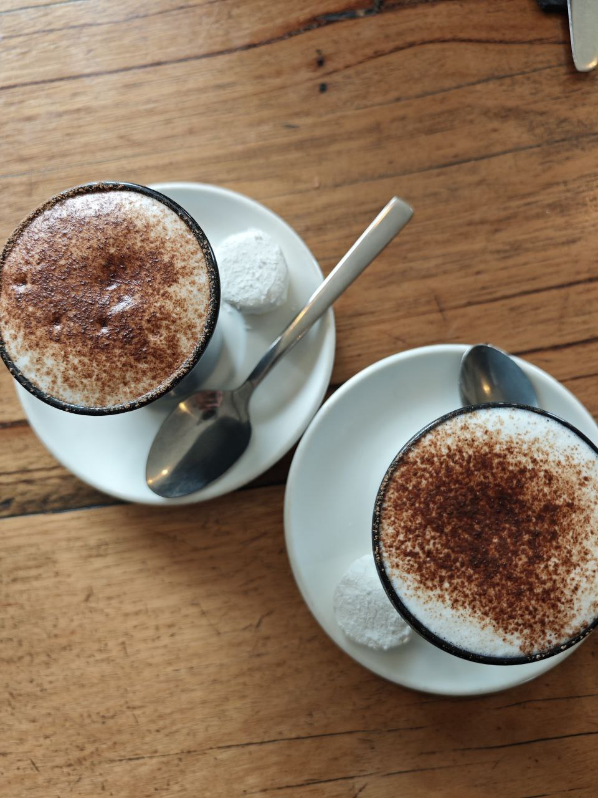
Anyways, thanks for indulging me by reading my silly journal entry and how I make a big deal of the simple things. But the simple, small things are the little bits of joy that contribute to the huge bubble of joy and satisfaction I have in life hehehe. Will definitely be coming back here, we've psyched Cheyne's two other roommates into wanting to come too muahaha